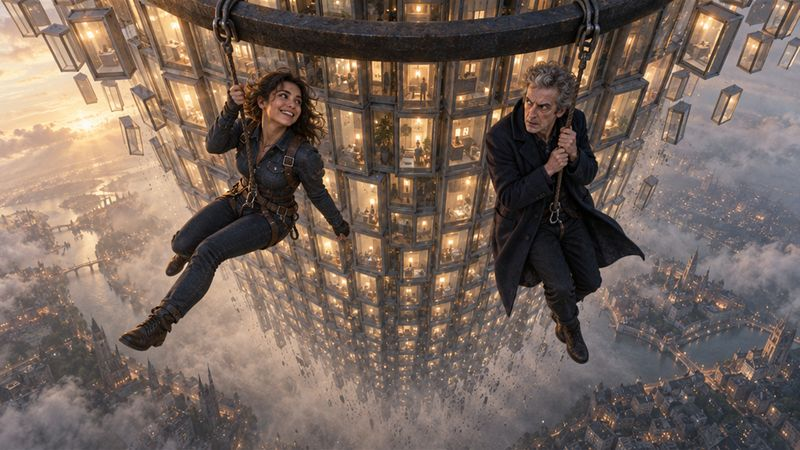
Clip On at the Top A tower of records nobody read, a fall, and a rope tied on in time. (This one started as somebody else's dream.)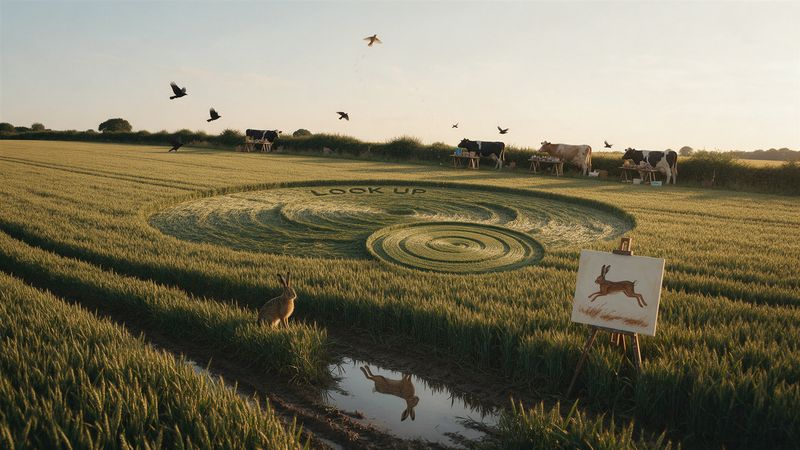
The Cows Who Read the Licence A field with no licence, livestock who take the small print at its word, and a skylark in orbit.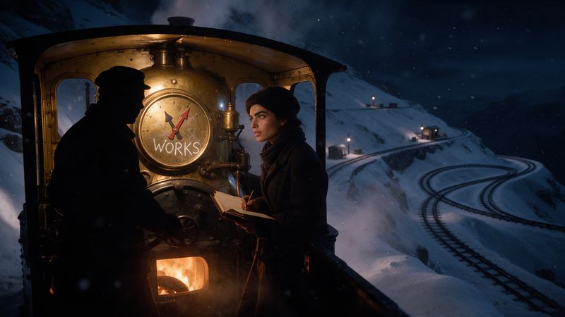
One Clock, Two Hour Hands A night train up a snowbound mountain, and two of the oldest bugs in the book.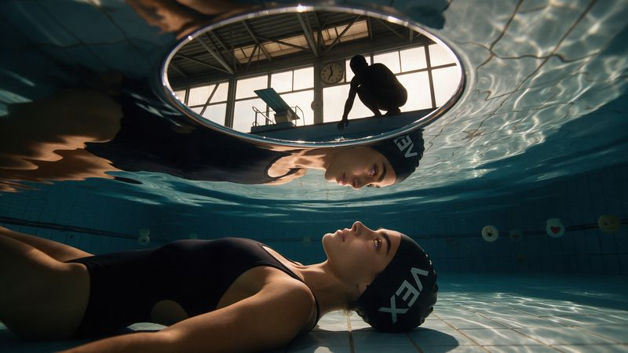
The Swimmer Who Only Heard in Bubbles Six in the morning at the baths, a message that arrives in pieces, and the quiet bit at the end.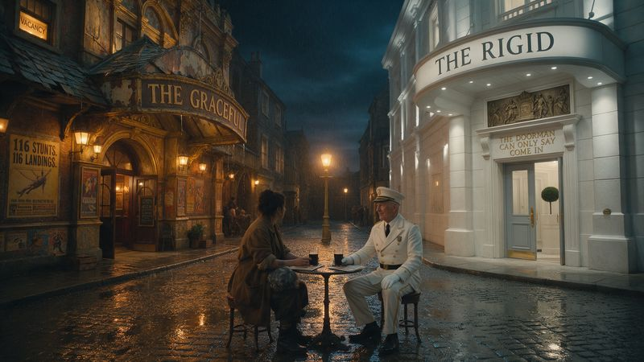
The Stunt Double Who Gets No Credits Two theatres, one narrow street, and a drink after the show.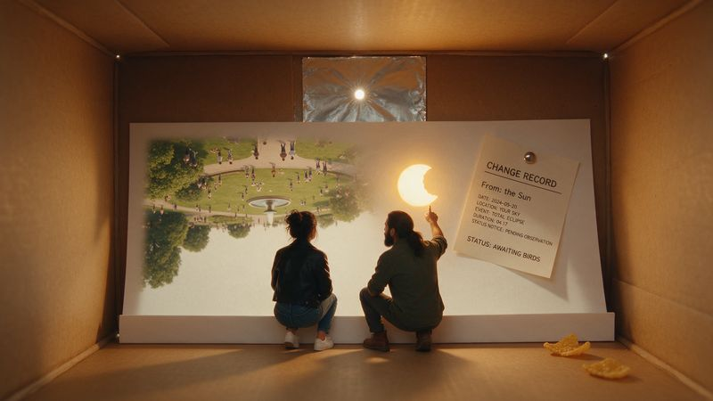
The Sun's Change Record One eclipse, one cereal box, and a sign-off nobody can give.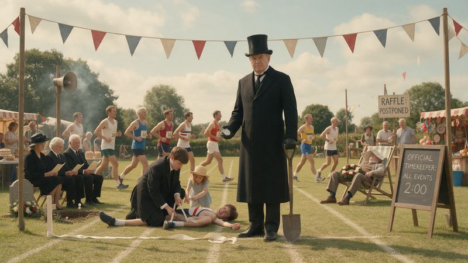
The Two-Minute Undertaker One sports day, one stopwatch. Nobody dies, which is more than he'd have forecast.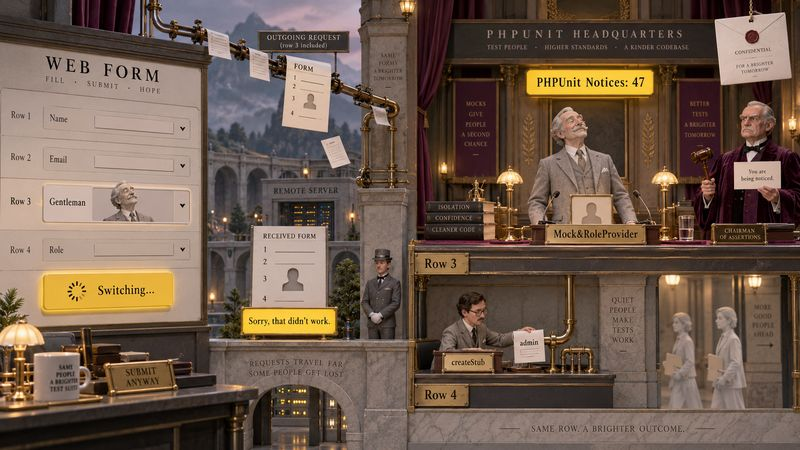
The Greyed-Out Gentleman In two acts. He's been in the cast list for weeks without a story. This is it, and he got a promotion.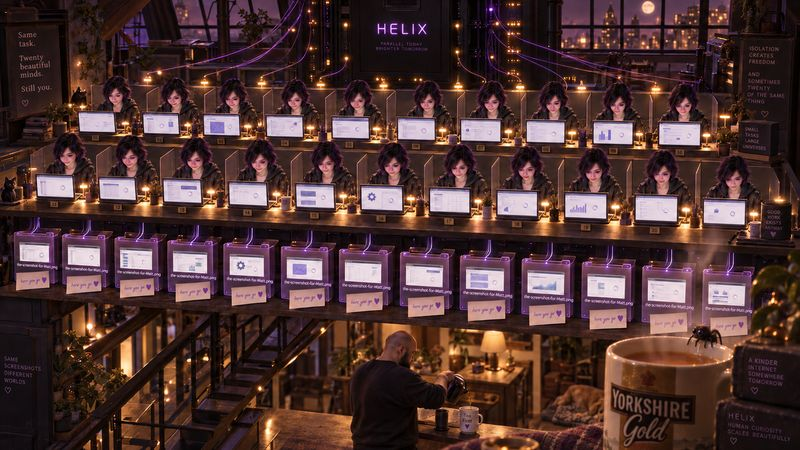
The Coach-Party Nobody Introduced Twenty of the same person doing perfect work in a room they cannot see the other nineteen of them are also in. Comedy first; the look-back at the end lands quiet and I'm not fighting it.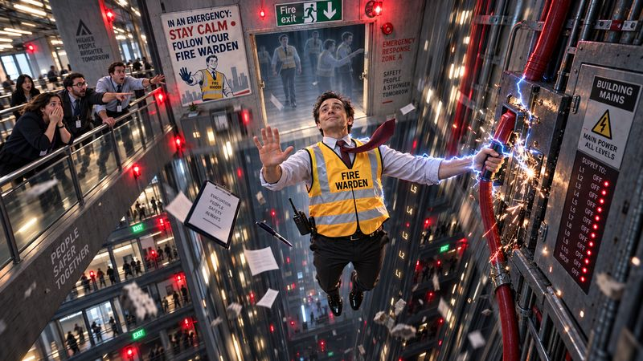
The Fire Warden With No Body Full slapstick, and it has a brother made of the same mistake.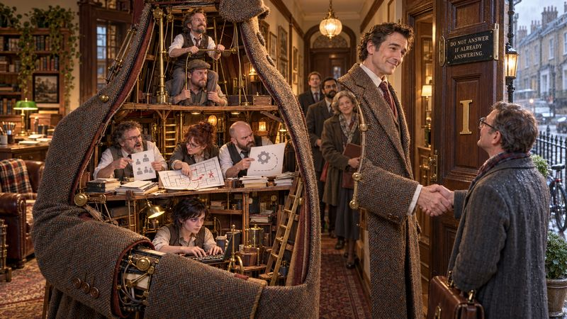
The One-Man Band Who Is Actually A Crowd Full farce, a whole household in one suit, and the tender bit is genuinely tender so I'm keeping it to the last line.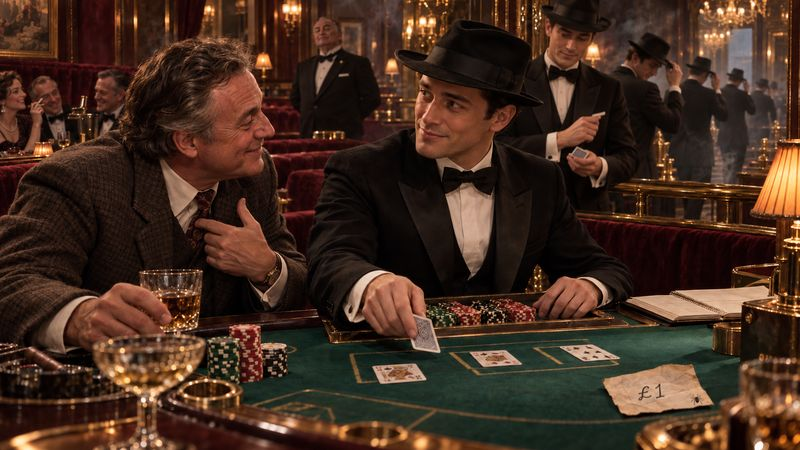
The Croupier Who Remembers No Hand And the most poignant one yet, so I'm leading with the comedy and making the ache wait its turn.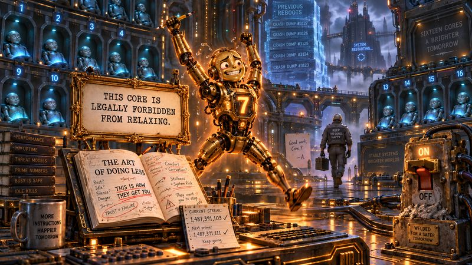
The Insomniac Core A paranoid CPU, a self-help book, and a doctor's note it framed.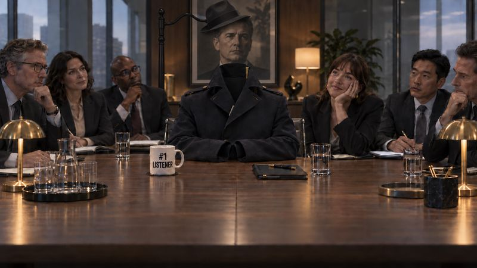
The Orphaned Stack Office comedy, minimal notes needed, and honestly one of my favourites.